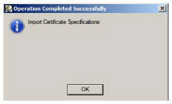
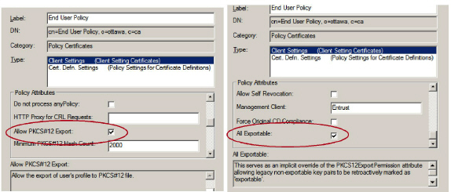

|
IdentityGuard Server 12.0 Administration Guide |
|
IdentityGuard Server 12.0 Administration Guide |
This section applies only if you are using a Security Manager CA.
This section includes two procedures for modifying Security Manager policies. You will need to complete one or both of them, depending on the digital ID types you are deploying (see Digital ID types and formats for details).
● If you are deploying PKCS#12 digital IDs, complete To configure the Security Manager user policy (PKCS#12 digital IDs).
● If you are deploying SCEP digital IDs, complete To modify the Verification_P10 policy (SCEP digital IDs).
To configure the Security Manager user policy (PKCS#12 digital IDs)
1. On the Security Manager computer, open the entmgr.ini file, located by default in c:\authdata\manager\ on Windows or /opt/entrust/authdata/CA/manager on UNIX.
2. Add these lines to the bottom of the file:
[Default Variable Values]
all_exportable=0
3. Save.
4. Log in to Security Manager Administration as a user who has sufficient permissions to create or modify user policies. For details, see the Entrust Authority Security Manager Administration User Guide.
5. Export the mastercert.spec file:
a. Click File > Certificate Specifications > Export.
b. Preserve all defaults and click Save.
6. Open the master.certspec file in a text editor.
7. Search for this string:
Polcert_cliset Attributes
8. Immediately under [polcert_cliset Attributes] add this line:
all_exportable=1.2.840.113533.7.77.63,Boolean,<all_exportable>
9. Search for this string:
[Variables]
10. Immediately below [Variables], add this string as a single line (if it is not already present):
all_exportable=Boolean,All Exportable:,This serves as an implicit override of the PKCS12ExportPermission attribute allowing legacy non-exportable key pairs to be retroactively marked as 'exportable'.,Range,0,1
Note: You can enter the preceding text as multiple lines if you add “_continue_=” at the start of each new line. It would look as follows:
all_exportable=Boolean,All Exportable:,This serves as an implicit overri
_continue_=de of the PKCS12ExportPermission attribute allowing legacy no
_continue_=n-exportable key pairs to be retroactively marked as 'exporta
_continue_=ble'.,Range,0,1
11. Save the file.
12. Import the master.certspec file:
a. In Security Manager Administration, click File > Certificate Specifications > Import.
b. Select the master.certspec you just modified.
c. Click Open and then click Save.
The Import Certificate Specification message appears.

d. Click OK.
13. In the tree view, expand Security Policy > User Policies.
14. Select the user policy, End User Policy.
15. Click the General Information tab.
16. In the Policy Attributes section, enable:
● Allow PKCS#12 Export
● All Exportable (listed at the bottom of the list of policy attributes)

17. Click Apply.
18. Assign the user policy to the End User role:
a. From the tree view, expand Security Policy > Roles.
b. Click End User.
c. Ensure that End User Policy is listed.
d. Click OK.
19. Restart the Entrust Authority Security Manager service, located under Start > Administrative Tools > Services on Windows.
You have now enabled PKCS#12 export for the End User policy.
To modify the Verification_P10 policy (SCEP digital IDs)
1. Log in to Security Manager Administration as a user who has sufficient permissions to create or modify user policies. For details, see the Entrust Authority Security Manager Administration User Guide.
2. From the tree view, expand Security Policy > User Policies.
3. Click Verification_p10 Policy.
4. In the main pane, click the General tab.
5. Under Policy Attributes, scroll to Key usage policy.
6. In the Key usage policy field, remove any existing entry and enter: both
7. Click Apply.
8. Restart the Entrust Authority Security Manager service, located under Start > Administrative Tools > Services on Windows.